Scenes

bar stool
吧椅

kitchen counter
厨房台面

gas stove
燃气灶

kitchen sink
水槽

fridge
冰箱
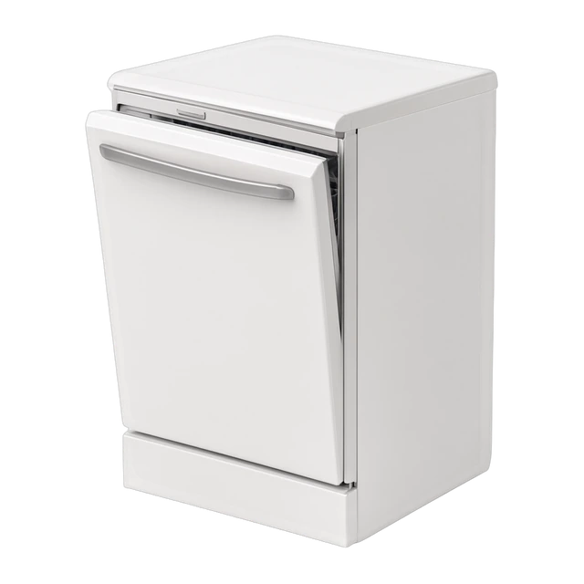
dishwasher
洗碗机

oven
烤箱

range hood
抽油烟机
厨具与餐具 Cookware and Tableware

dish rack
沥水架

frying pan
平底锅
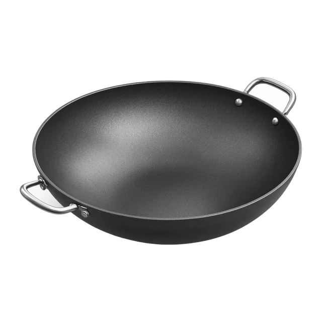
wok
炒锅
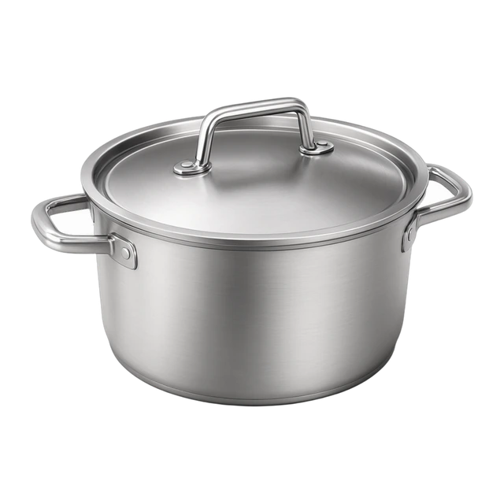
pot
汤锅

cutting board
砧板

kitchen knife
菜刀
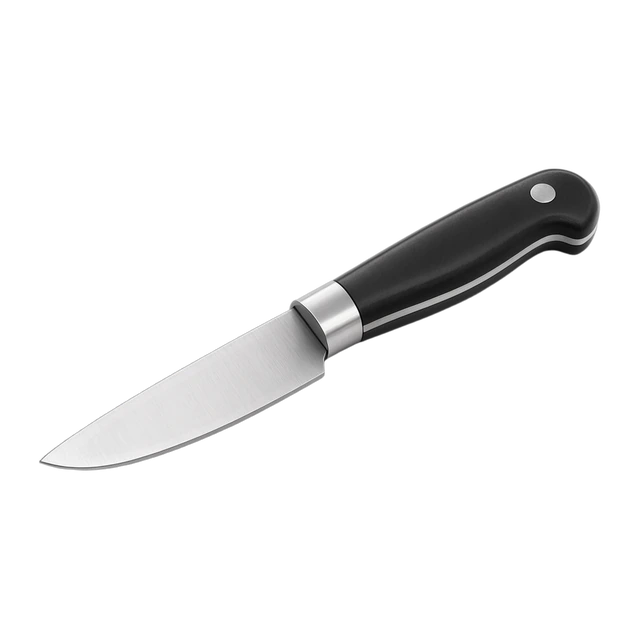
paring knife
水果刀
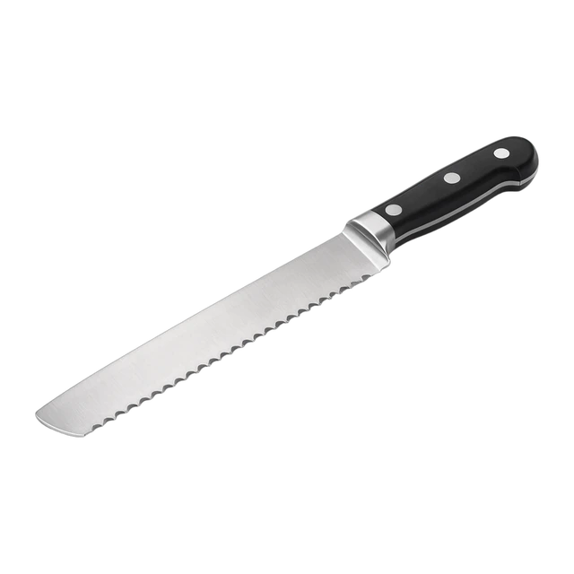
bread knife
面包刀

cleaver
斩骨刀

bowl
碗
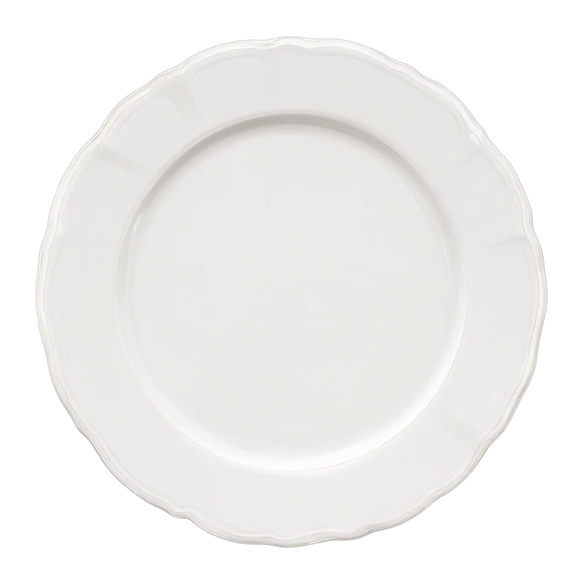
plate
盘子

chopsticks
筷子

mug
马克杯
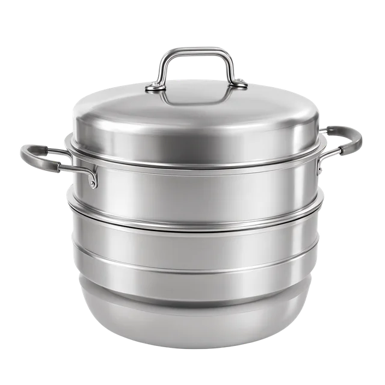
steamer
蒸锅

spatula
锅铲

ladle
汤勺
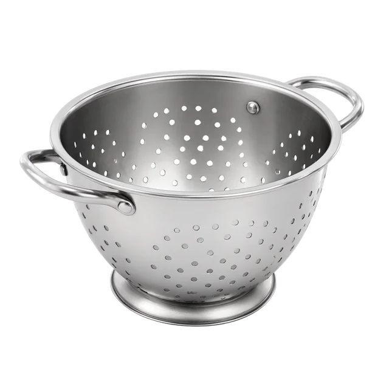
colander
漏勺

grater
擦丝器

peeler
削皮刀

whisk
打蛋器

measuring cup
量杯

food container
保鲜盒

spoon
勺子

fork
叉子

table knife
餐刀
家电 Appliances
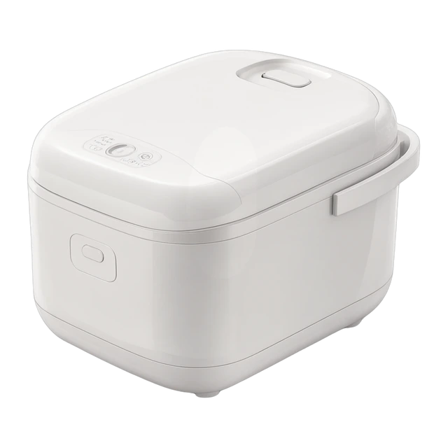
rice cooker
电饭煲

electric kettle
电水壶

microwave
微波炉
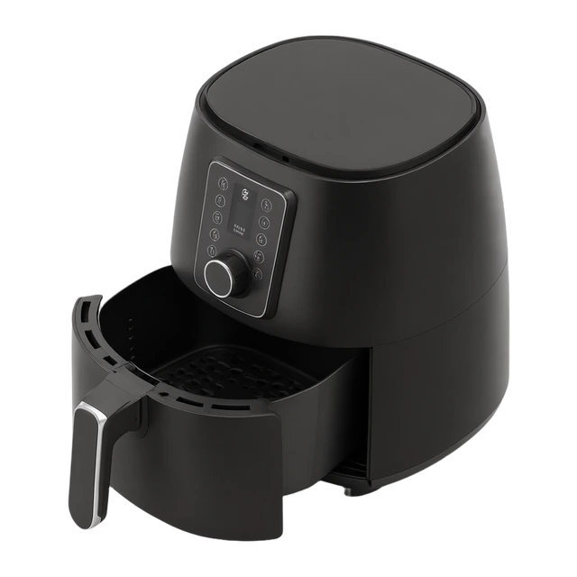
air fryer
空气炸锅

toaster
烤面包机
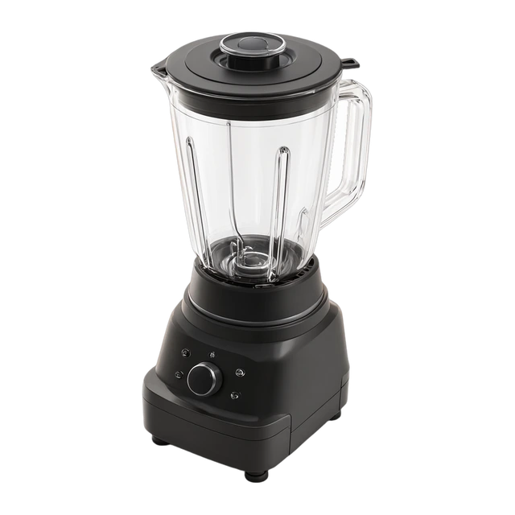
blender
搅拌机

coffee machine
咖啡机

induction cooktop
电磁炉
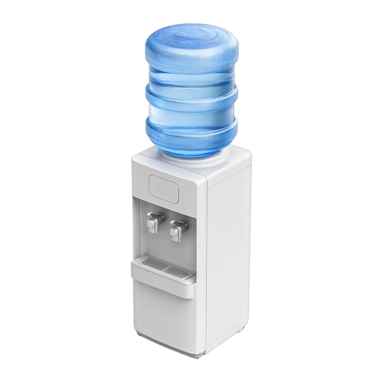
water dispenser
饮水机
清洁 Cleaning

mop
拖把

broom
扫把

dustpan
簸箕

trash can
垃圾桶

recycling bin
回收箱

cleaning spray
清洁喷雾

rubber gloves
橡胶手套

squeegee
刮水器

dish soap
洗洁精
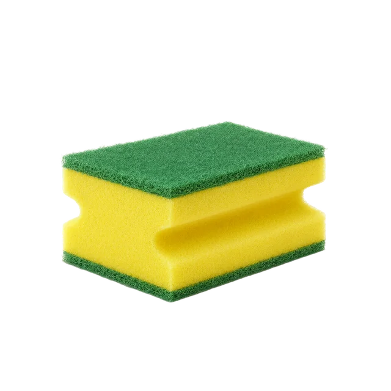
sponge
海绵

scouring pad
钢丝球

cleaning rag
抹布
disinfectant
消毒液
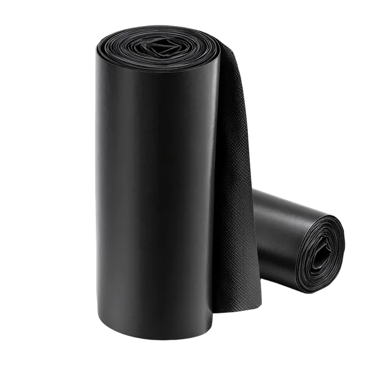
trash bags
垃圾袋
收纳 Storage

storage cabinet
储物柜

storage box
收纳箱

drawer organizer
抽屉收纳盒
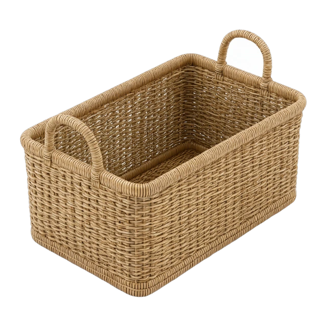
storage basket
收纳篮